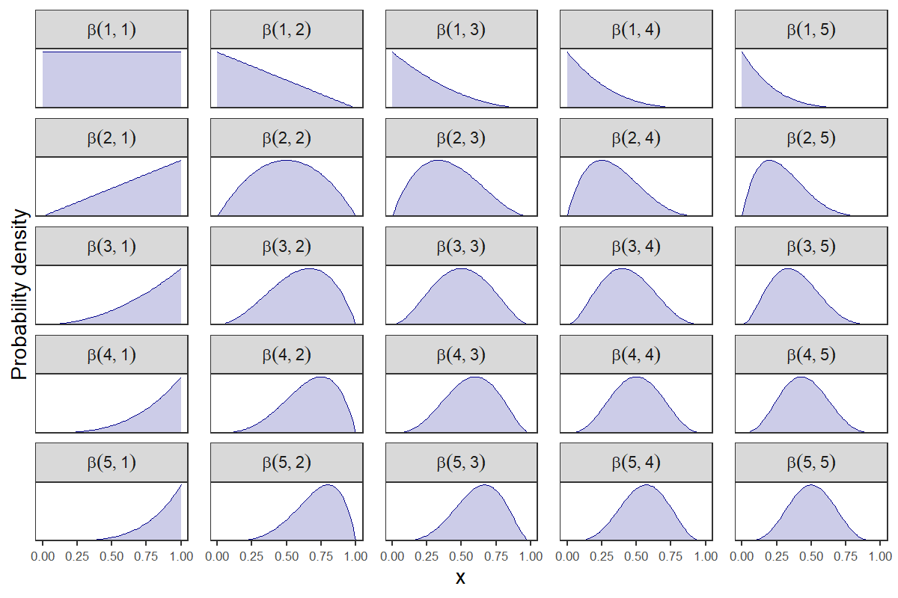
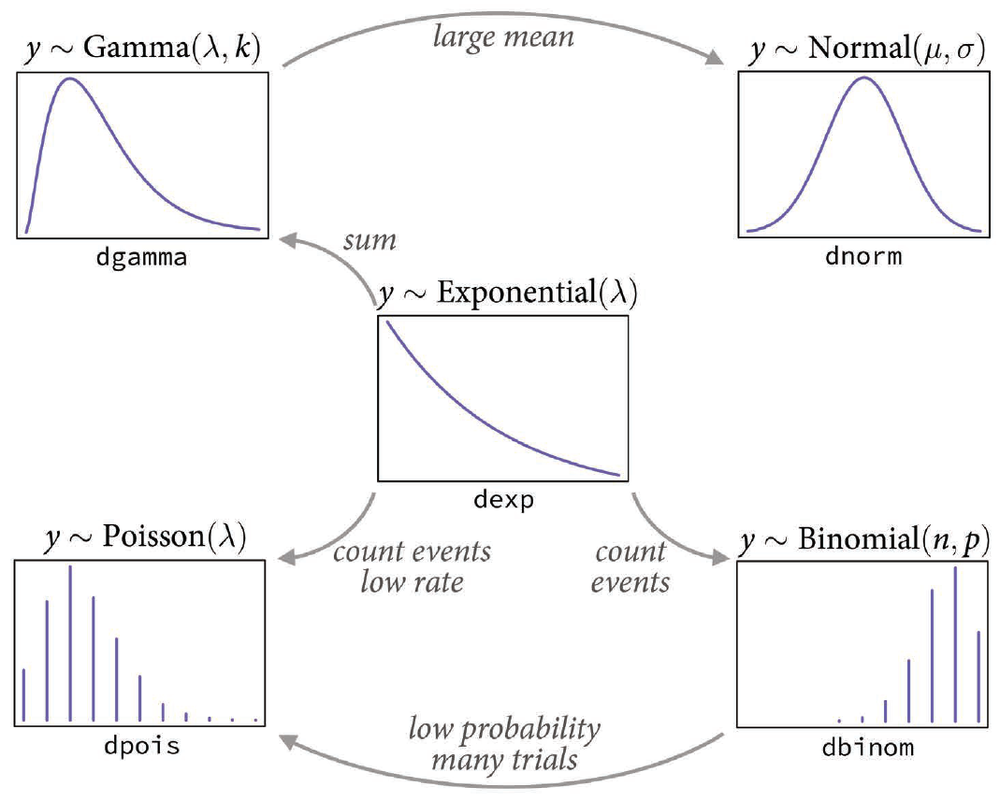
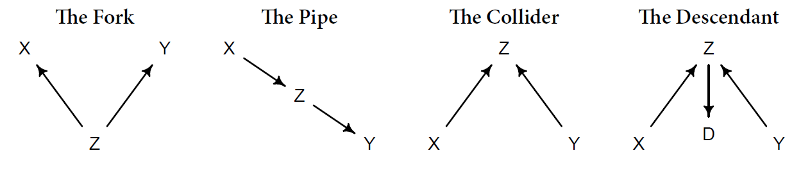
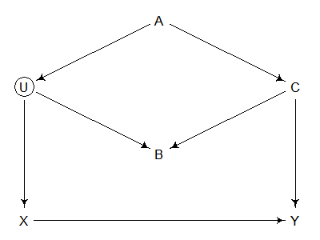
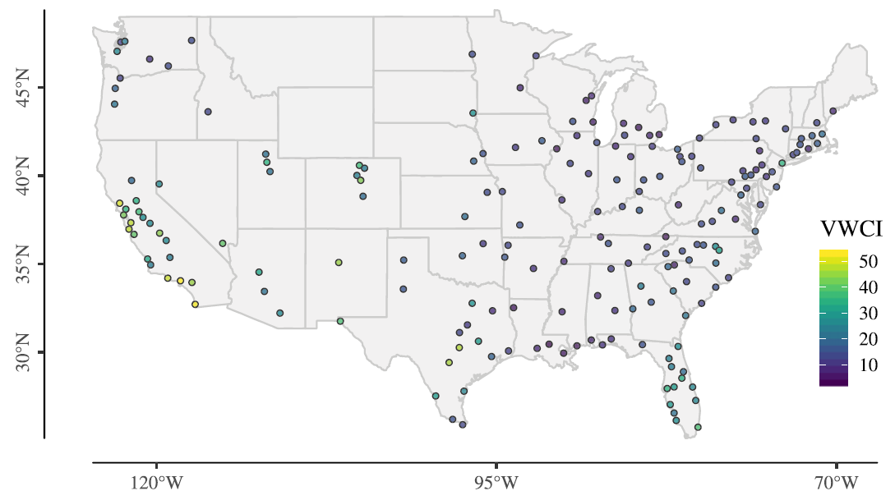
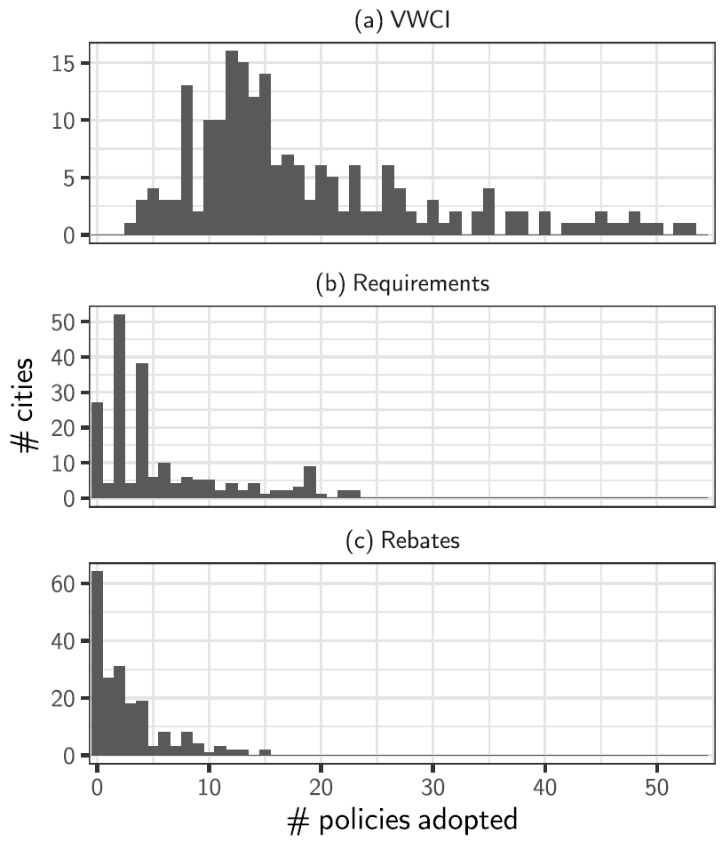
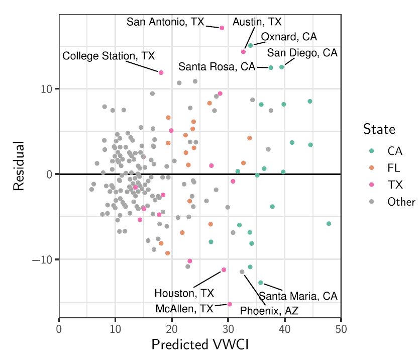
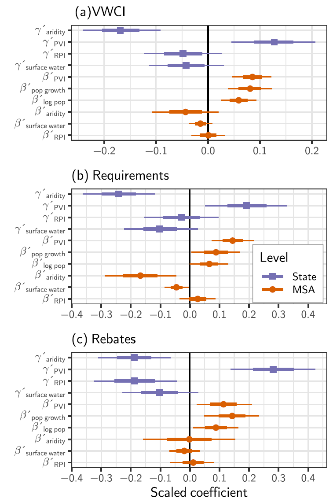
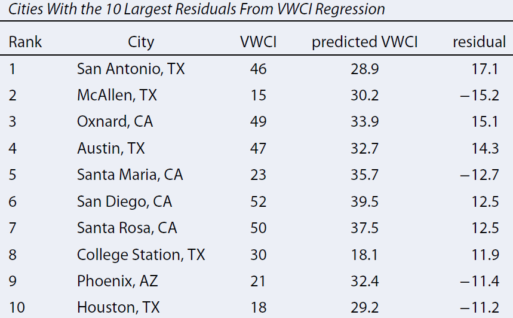

dbinom(1, p)
rbinom(N, p)dpois(lambda)Link functions:
\[ \begin{align} Y &\sim \text{Binomial}(N, p) \\ p &= \text{logit}^{-1}( \alpha + \beta X) \end{align} \]
y ~ dbinom(N, lambda),
logit(p) = a + b * x\[ \begin{align} Y &\sim \text{Poisson}(\lambda) \\ \lambda &= \exp( \alpha + \beta X) \end{align} \]
y ~ dpois(lambda),
log(lambda) = a + b * xPriors for probabilities (range 0 to 1)
dbeta(a, b)


categorical())dirichlet())
Data is grouped into clusters
Hyperpriors and hyperparameters:
Single-level model
\[ \small \begin{align} Y &\sim \text{Normal}(\mu, \sigma) \\ \mu &= \alpha + \beta X \\ \alpha &\sim \text{Normal}(0, 1) \\ \beta &\sim \text{Normal}(0, 1) \\ \sigma &\sim \text{Exponential}(1) \\ \end{align} \]
Two-level model (varying intercept)
\[ \small \begin{align} Y &\sim \text{Normal}(\mu, \sigma) \\ \mu &= \alpha + \beta X \\ \alpha &\sim \text{Normal}(\bar \alpha, \sigma_\alpha) \\ \beta &\sim \text{Normal}(0, 1) \\ \bar \alpha &\sim \text{Normal}(0, 1) \\ \sigma &\sim \text{Exponential}(1) \\ \sigma_\alpha &\sim \text{Exponential}(1) \\ \end{align} \]
Two-level model (varying intercept, varying slope)
\[ \small \begin{align} Y &\sim \text{Normal}(\mu, \sigma) \\ \mu &= \alpha + \beta X \\ \alpha &\sim \text{Normal}(\bar \alpha, \sigma_\alpha) \\ \beta &\sim \text{Normal}(\bar \beta, \sigma_\beta \\ \bar \alpha &\sim \text{Normal}(0, 1) \\ \bar \beta &\sim \text{Normal}(0, 1) \\ \sigma &\sim \text{Exponential}(1) \\ \sigma_\alpha &\sim \text{Exponential}(1) \\ \sigma_\beta &\sim \text{Exponential}(1) \\ \end{align} \]
Two-level model (correlations between slope and intercept)
\[ \small \begin{align} Y &\sim \text{Normal}(\mu, \sigma) \\ \mu &= \alpha + \beta X \\ \begin{bmatrix} \alpha \\ \beta \end{bmatrix} &\sim \text{MVNormal}\begin{pmatrix} \begin{bmatrix} \bar \alpha \\ \bar \beta \end{bmatrix}, S \end{pmatrix} \\ S &\sim \begin{pmatrix} \sigma_\alpha & 0 \\ 0 & \sigma_\beta \end{pmatrix} R \begin{pmatrix} \sigma_\alpha & 0 \\ 0 & \sigma_\beta \end{pmatrix} \\ \bar \alpha &\sim \text{Normal}(0, 1) \\ \bar \beta &\sim \text{Normal}(0, 1) \\ \sigma &\sim \text{Exponential}(1) \\ \sigma_\alpha &\sim \text{Exponential}(1) \\ \sigma_\beta &\sim \text{Exponential}(1) \\ R & \sim \text{LKJCorr}(2) \end{align} \]
Analyze relationships between variables
Four fundamental types of confounding relationships:

General rules:
Example (Section 6.4.2)

dagitty’s
impliedConditionalIndependencies() function is your
friend.


Original residuals showed data were overdispersed (variance was too great for a Binomial), so we changed the model to use a beta-binomial distribution (see Chapter 12).
\[ \begin{align} V_i &\sim \text{beta-Binomial}(N_{\text{Actions}}, \phi p_i, \phi (1 - p_i) \\ \end{align} \]

